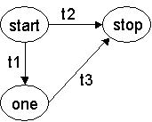
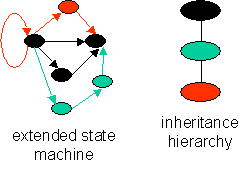
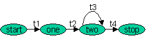
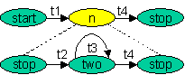

|
|
State Machine5 (SM5) Domain-Specific Language |
SM5 is a domain-specific language (DSL) extension to Java. It allows state machines to be defined, and inheritance hierarchies of state machines to be created. It replaces earlier versions (SM, SM5) of the language and represents a significant improvement in functionality. An overview of this document is:
Basic Concepts and Declarations |
A state machine is a model of a program consisting of:
Every SM5 state machine has a start and stop state. An SM5 machine beings at the start state and ends at stop. The names of all other states must be declared explicitly using the States declaration:
Syntax: States <list-of-state-names-separated-by-commas>;
Example: States one, two, three;
The type of event and the name of an event variable that delivers an event to a state machine must be declared in SM5:
Syntax: Delivery_parameters(<event-type> <event-variable>);
Example: Delivery_parameters( Evnt e );
A transition has a name, a begin state, an end state, a transition condition (which is a Java boolean expression), and a transition action (which is a block of Java/Jak statements). Both the condition and action code can reference the event variable, which in our example above is e:
Syntax: Transition <name> : <begin-state> -> <end-state> condition <boolean-expression> do { <Jak code> } Example: Transition initiate : start -> one condition e.msg.equals("initiate") do { process_initiate_message(e); }Note: boolean expressions should have no side effects. The reason is that the order in which transition conditions are evaluated should not effect their truth value.
As an example, state machine S below has 3 states and three transitions. Events are of type "Evnt". The predicates and actions for each transition are declared in separate methods:
State_machine S { Delivery_parameters( Evnt e );States one; // start and stop are implicit Transition t1 : start -> one condition t1_pred(e) do { t1_act(e); } Transition t2 : start -> stop condition t2_pred(e) do { t2_act(e); }Transition t3 : one -> stop condition t3_pred(e) do { t3_act(e); }// Jak class declarations from this point onboolean t1_pred(Evnt e) { ... } boolean t2_pred(Evnt e) { ... } boolean t3_pred(Evnt e) { ... } void t1_act(Evnt e) { ... } void t2_act(Evnt e) { ... } void t3_act(Evnt e) { ... } S() {} // empty constructor }Note: predicates and actions need not be defined in separate methods; their bodies could be listed in Transition declarations.
Before S can be executed, it must be translated to Java using the Jak2Java tool. Doing so converts S into a Java class that has the following public methods:
boolean atStop(); // is state machine instance in stop state? void delivery(Evnt e); // method to deliver an event to a machine instance String getState(); // returns the name of the current state
A program that creates events and delivers it to an instance of S is shown below:
S s = new S(); // create instance of S
while (moreEvents) {
Evnt e = ... // create new event
s.delivery(e); // deliver event e to s
}
Mealy and Moore State Machines |
There are two common forms of state machines. Those that performs actions only on transitions are called Mealy machines. The SM5 constructs introduced so far express Mealy machines. State machines whose only actions occur upon entering a state are Moore machines. Mealy machines tend to be more compact than Moore machines as they require fewer states. Both kinds of machines -- and their combination -- can be expressed in SM5.
SM5 allows the following methods to be declared per state:
A common syntax is used for declaring state Enter, Exit, and Prepare methods:
Syntax: Enter <state-name> { <code> } Syntax: Exit <state-name> { <code> } Syntax: Prepare <state-name> { <code> }Example: Enter stop { System.out.println("finished"); }
The utility of Enter and Exit methods are evident, but not so for Prepare. Consider the following transitions from state x:
Transition r1 : x -> y
condition something_complicated(e) && another(e) do { ... }
Transition r2 : x -> z
condition !something_complicated(e) && another(e) do { ... }
Two methods, something_complicated() and another(), will be evaluated, possibly multiple times. Because these predicates have no side effects, their re-evaluation is redundant. To avoid this, use a Prepare method that evaluates these methods once. Transition conditions can then refer to their values:
Prepare x { sc = something_complicated(e); an = another(e); }Transition r1 : x -> y condition sc && an do { ... } Transition r2 : x -> z condition !sc && an do { ... }boolean sc, an;
Prepare declarations are generally used for such optimizations.
Note: Prepare actions should have no side-effects other than setting the values of temporary variables.
State Machine Inheritance Hierarchies |
SM5 state machines can appear in inheritance hierarchies, just like classes. Consider the figure to the right. It shows a state machine that was extended twice: the original machine is defined by black nodes and black arcs. The first or green extension adds additional green nodes and edges. The second or red extension adds another red node and red edges. Although this example focuses on a linear hierarchy, the hierarchy could have many branches, just like class inheritance hierarchies. In this section, we focus on the core ideas of extension, the state machine counterpart to subclassing. In the following section, we'll talk about refinements.
This example is expressed in SM5 as an inheritance hierarchy of three state machines. The original machine defines the black machine in this figure. A sketch of this specification is given below, along with some notes:
|
(1) (2) (3) (4) (5) (6) |
Notes:
(1) Each state machine specification is translated into a Java class and a .ser file. The .ser file contains information -- such as state and transition declarations -- that is to be "inherited" by state machines that extend it. (SM5 uses this information to generate code for state machine extensions). See point (3) below. The .ser files are generated in the same directory as the .java files.
(2) The root machine of an inheritance hierarchy has the following characteristics. (a) It is either a stand-alone declaration or it can inherit from a previously defined class. See point (3) below. (b) It has an Delivery_parameter clause.
As a general rule, a Delivery_parameter clause can be inferred at composition time, if one is not present. Otherwise, define a Delivery_parameter for each state machine and state machine refinement. Note that ATS currently does not check to see if previously defined (e.g., inherited) Delivery_parameter declarations are consistent with the current. ATS assumes that the "most" refined Delivery_parameter clause is the declaration to use..
(3) A state machine can be (a) stand alone (just like an individual class), (b) it can extend a previously defined class C, or (c) it can extend a previously defined state machine S. The syntax for each declaration is shown below:
State_machine standAlone {...}State_machine descendsFromClass extends class C { ... }State_machine descendsFromMachine extends S { ... }(b) is common. In our examples of previous sections, the error() and ignore_message() methods could be inherited from such a class.
Note: there is nothing in the SM5 DSL that allows a class to be a subclass of a state machine (and there are no checks to alert SM5 users to this). Don't do this!! -- SM5 will not catch the error and translations of state machine specifications may be incorrect if this is done.
(4) When extending a state machine, the names of new states and new transitions cannot conflict with those previously declared by the parent machine.
(5) Any modifiers (public, static, final, etc.) that can be used for class declarations can also be used for State_machine declarations. The modifier list in front of State_machine will be the modifier list of the generated Java class.
(6) Both start and stop states can have transitions to other states. Both start and stop states can have enter and exit methods.
As a rule: transitions within a state machine are evaluated in order that they are defined. In an inheritance hierarchy, the transitions defined in the object's state machine are evaluated first, then the transitions defined in its parent, and so on, where the transitions in the root state machine are evaluated last.
Refinements |
A state is refined by extending its Enter, Exit, Prepare, or Otherwise method. This is done simply by declaring a new Enter, Exit, Prepare, or Otherwise method that appears after the original. (By after, we mean sequentially after -- as in the same state machine declaration -- or as a declaration in a child state machine of a parent machine in an inheritance hierarchy). As an example, suppose the Exit method for state y is:
Exit y { doLast(e); }
The following Exit method extends the above method:
Exit y { doFirst(e); }
The net effect of these two declarations is a single Exit method with the following effect:
Exit y { doFirst(e); doLast(e); }
As a rule, the code of a method refinement is executed before previously defined code. (That is, in a sequence of Exit declarations, the declaration that is defined last is executed first, and the first declaration is executed last. This follows the normal refinement paradigm of executing the most refined code first and the original code last). This execution order can be changed explicitly using the Proceed construct, a topic we consider later.
A transition is refined by extending its condition or action method. The syntax is:
Syntax: Transition_condition <edge-name> <predicate>; Syntax: Transition_action <edge-name> { <code> }
The condition predicate must contain the function Proceed(e), where "e" is the event variable name. Proceed(e) represents the original predicate. As an example, consider the following transition and refinement:
Transition t1 : x -> y condition pred(e) do { doLast(e); }
Transition_condition t1 newPred(e) || Proceed(e);
Transition_action t1 { doFirst(e); }
Their composition is equivalent to the following:
Transition t1 : x -> y condition newPred(e) || pred(e) do { doFirst(e); doLast(e); }
Action refinement, again, follows the paradigm of executing the most refined code first and the original code last. This order can be changed by using the Proceed construct.
As an aside, it has been suggested that abstract transitions be added to state machine declarations. Note that refinement allows one to accomplish something similar. Consider the following "abstract" transition -- it is abstract in the sense that it will never be traversed since its condition is false:
Transition abst : x -> y condition false do { }Refinements of this transition (in state machine inheritance hierarchies) can "activate" the edge by refining both its condition and action.
Finally, Otherwise_default methods -- a concept that we will introduce in the next section -- can be refined just like state methods. The composition of the following declarations:
Otherwise_default { doitLast(); }
Otherwise_default { doitFirst(); }
is equivalent to:
Otherwise_default { doitFirst(); doitLast(); }
Dealing with Errors |
Errors occur. A catastrophic error is when the current state of a machine is corrupted. A potentially less significant error is when a delivered event triggers no transition (as no transition condition was satisfied). In all these cases, a user will want to be alerted to these situations. SM5 provides three constructs for doing so:
All of the above declarations are optional. Their syntax is below:
Syntax: Unrecognizable_state { <code> }
Syntax: Otherwise_default { <code> }
Syntax: Otherwise <state-name> { <code> }
Again, code for an Unrecognizable_state is the action to take under catastrophic conditions. By default, the action is:
System.err.println("Unrecognizable_state" + current_state);
System.exit(1);
current_state is a generated variable whose value is the current state of the state machine. Note: because this is a generated variable, its name can change over time. Don't access it.
In some applications (e.g., FSATS), it is possible for events to be lost or to arrive out-of-order. Otherwise_default and Otherwise statements declare the actions to repair the state of a machine. An Otherwise_default action defines error recovery code that all states share. Otherwise <state> code defines additional error recovery actions that are specific to a state. Thus, given the declarations:
Otherwise_default ( meLast(e); }
Otherwise x { meFirst(e); }
If an event is received in state x and no transitions occur, the meFirst code will be executed first and then meLast. This is equivalent to:
Otherwise_default ( }
Otherwise x { meFirst(e); meLast(e); }
Consider the following variation of the above, where only the otherwise action is performed. That is, in state x, if event e satisfies predicate my_test(e), then only recovery_action() is executed, else the event is ignored. This would be expressed as:
Otherwise_default ( ignore_event(e); }
Otherwise x {
if (my_test(e)) {
recovery_action();
return; // important -- otherwise code will "fall through" to Otherwise_default
}
}
Specifying a return after recovery_action is important, as if it is absent, the Otherwise_default code (to ignore the message) will be executed.
To have more control over where Otherwise_default code is executed, see the Proceed feature.
Goto_state |
Recovery from an error often requires a transition from the current state to another state. While this can be expressed as a transition, error transitions sometimes transform a simple state machine into a clique (i.e. a fully-connected graph). To avoid cliques, it is necessary to have an explicit construct for transitioning to another state. This is the purpose of the Goto_state statement:
Syntax: Goto_state <state-name> (<event-variable>);
SM5 translates this construct into a sequence of two method calls: exit-from-current-state; enter-new-state. Both methods take an event as input, and this is why an event must be supplied with a Goto_state statement. Normally, the event that triggered the exceptional condition is used as the Goto_state parameter.
Recovery actions sometimes not only require a transition to a new state, but also the processing of an event in that state. Consider this example: event e is only processed in state y. Let x be the current state of a machine, and let there be a sequence of events that transition x to y. Suppose this entire sequence of events is lost. When event e arrives at state x, the recovery action for x is to (1) transition to state y, and (2) let this event be processed by y. This is specified by:
Goto_state y (e); // (1) delivery(e); // (2)
Proceed |
A before method is a method that is executed prior to a base method. An after method is a method that is executed after a base method. An around method is a pair of code fragments, one fragment is executed before the base method, and the second is executed afterwards.
As we saw earlier, Enter, Exit, Prepare, Otherwise, Otherwise_default, and Transition_action methods are default before methods. That is, the most specific refinements are executed first, and the original method definitions are executed last. To alter this execution order, the Proceed construct is used. Proceed looks like a method call; it takes an event as a parameter. Proceed is a place-holder that references the previously defined Enter, Exit, Prepare, etc. method. (Since the names of these methods are generated, they cannot be exposed to SM5 programmers. Proceed is the placeholder for a generated method name). As an example, suppose the base enter method is:
Enter x { foo(e); }
Four separate refinements of this method are listed below: the first two are before rewrites, the third is an after rewrite, and the last is an around. The comments to the right indicate the semantics of that refinement composed with the above base method:
Enter x { before(e); } // same as before(e); foo(e);Enter x { before(e); Proceed(m); } // same as before(e); foo(e);Enter x { Proceed(e); after(e); } // same as foo(e); after(e);Enter x { before(e); Proceed(e); after(e); } // same as before(e); foo(e); after(e);Note: the Proceed construct should be used only in very restrictive cases, as default before method behavior should be sufficient.
In the unlikely circumstance that a complete override (without calling the base method) is needed, SM5 requires you to use a truly ugly hack. To override the base Enter method above, write:
Enter x { <override code>; if (false) Proceed(e); }SM5 assumes if a Proceed is not present in a code fragment, the default behavior is as a before method. The above hack satisfies the requirement that a Proceed is present, but it is not executed. Again, complete method overrides should never be used.
Other Useful Features |
Star Transition |
Occasionally it is useful to define generic transitions from all nodes to terminate at designated node. The idea is to define the transition once, using a "wild-card" as the start node of a transition using the following specification:
Syntax: Transition <transition-name> : * -> <end-state> condition <predicate> do { <action> }Example: Transition myedge : * -> endstate condition ... do { ... }
The above is called a "star transition", and looks identical to a normal transition declaration, except that the starting node is "*". All nodes in a graph will have a transition called (in this example) "myedge" that will terminate at (in this example) "endstate". Star transitions can be refined like normal transitions.
Star transitions can appear in any state machine in an inheritance hierarchy. These transitions are inherited by all state machine descendants, so any states that are introduced by descendants will participate in a star transition. Star transitions for a state are evaluated AFTER all non-star transitions have been considered. Further, the order in which star transitions are evaluated within a state machine declaration is the order in which they are defined. In an inheritance hierarchy, the star transitions of an object's state machine are evaluated first, then the star transitions of the parent machine, and so on, where the star transitions of the root state machine are evaluated last.
Nested State Machines |
Nesting state machines, where an entire state machine represents a single state in another, more abstract machine, is a useful concept. The semantics of nested machines can be very tricky, as what triggers the entry into a nested machine, what triggers the exit from a nested machine, among other things is not immediately obvious.
SM5 uses procedure semantics. That is, entering a nested machine is identical to entering a procedure. The unnested state machine that is equivalent to a nested machine is formed by "in-lining" the nested machine into its parent. (This is analogous to in-lining the body of a procedure where ever the procedure is called).
Consider the following unnested machine with four states: start, one, two, and stop:
State_machine unnested { Delivery_parameter(Evnt e);States one, two;Transition t1: start -> one condition c1 do { x1 }; Transition t2: one -> two condition c2 do { x2 }; Transition t3: two -> two condition c3 do { x3 }; Transition t4: two -> stop condition c4 do { x4 }; }
We can abstract the state machine fragment represented by states one and two into a separate state machine, called proc:
State_machine proc { Delivery_parameter(Evnt e); States two; // start state of proc is // equivalent to state one in unnested
Transition t2: start -> two condition c2 do { x2 }; Transition t3: two -> two condition c3 do { x3 }; Transition t4: two -> stop condition c4 do { /*nothing*/ }; }
A state machine equivalent to unnested, using machine proc, is:
State_machine equiv { Delivery_parameter(Evnt e);Nested_state n : new proc();Transition t1: start -> n condition c1 do { x1 }; Transition t4: n -> stop condition true do { x4 }; }
Here's how the equiv machine works. Nested state n is defined by the following SM5 construct:
Syntax: Nested_state <state-name> : <constructor-for-state-machine-object>;Example: Nested_state n : new proc();
When equiv transitions to state n, an instance of the proc machine is created. From this point on, all events delivered to equiv will be immediately delivered to proc for processing. Only after the proc machine has finished will normal event processing by equiv continue.
The proc machine is finished when it has reached its stop state. The event that causes proc to stop will be given to the calling equiv machine for processing. Look carefully at the above example. Transition t4 in proc uses the predicate for t4 in the original state machine to transition to the stop state, but there is no action (i.e., /*nothing*/) performed. The event that stopped the proc machine is now given to the parent machine for processing. Transition t4 in equiv has a true predicate (meaning that as soon as the proc machine is finished any event automatically moves the equiv machine to the stop state). The action of t4 in the original state machine is now performed.
Using the above guidelines, state machines can be nested arbitrarily deep. Once a nested machine is created, it will process all events delivered until it finishes or another nested machine is created. This organization should help simplify error processing. If an error transition cannot be made within within the current machine, the machine finishes and requires its parent machine to repair the error. Error recovery recurses upwards to the level at which recovery makes sense.
What is Generated? |
To get a sense of how an SM5 specification is translated to Java, we review several key methods. The delivery method delivers a new event to a state machine using the following organization. When an event is received, it is dispatched to the appropriate state. The prepare method of that state is executed, followed by a "branches" method. current_state is a generated internal variable whose value is the current state of the machine. If the current state is unrecognized, then the code for unrecognized state is executed.
public void delivery( Evnt e ) {
if (current_state == start) { start_prepare(e); start_branches(e); return; }
if (current_state == stop) { start_prepare(e); stop_branches(e); return; }
if (current_state == one) { start_prepare(e); one_branches(e); return; }
// code for Unrecognizable state placed here
}
Every state has an internal "branches" method. Each transition from this state will have a "if" statement that tests the predicate of the transition. If satisfied, the exit method for that state is called, the transition action is performed, and the enter method for the new state is called. Only one transition will be fired when an event is received. The order in which transition conditions are tested is the order in which the transitions are defined (modulo star transitions). If no event satisfies a transition condition, the state's otherwise method is invoked.
void three_branches( M m ) { // Transition t6 : three -> four condition ... do ... if ( t6_test(m) ) { three_exit(m); t6_action(m); four_enter(m); return; }// Transition t7 : three -> six condition ... do ... if ( t7_test(m) ) { three_exit(m); t7_action(m); six_enter(m); return; } three_otherwise( m ); }
Each state X will have the following void internal methods generated:
Each transition T will have the following internal methods generated:
Error Messages |
The following is a subset of the error messages that SM5 can generate. All other messages are errors internal to SM5. Please contact SM5 authors for repairs.
| Error | Action |
| Unrecognized state S | State S has been referenced, but has yet to be defined. Action: define S. |
| cannot find file: F (or F.ser) | A state machine is extending a previously defined state machine, but its .ser file cannot be found. Action: check correctness of extending file name or translate state machine F first. |
| Delivery_parameter clause is missing in specification X |
X is a state machine specification that does not extend a previously defined state machine. Action: define an Delivery_parameter clause. |
| Delivery_parameter clause is present in specification X |
X is a state machine specification that extends a previously defined state machine. Action: remove X's Delivery_parameter clause. |
| duplicate state name S | state S has been defined multiple times. Action: remove duplicate declarations. |
| multiple Exit state declarations for state S |
At most one Exit state declaration can exist within a single state machine specification. Action: remove all but one Exit state declarations for state S |
| multiple Enter state declarations for state
S |
At most one Enter state declaration can exist within a single state machine specification. Action: remove all but one Enter state declarations for state S. |
| duplicate transition declaration E |
Edge E has been defined multiple times. Action: remove duplicate declarations. |
| multiple Otherwise declarations for state S | Otherwise S has been defined multiple times. Action: remove duplicate declarations. |
| Proceed not found in method | A Proceed call was expected in the designated method. (Presently limited only to Transition_condition methods). Action: add Proceed call. |
| Proceed should not be present. | Proceed calls can appear only within Enter, Exit, Prepare, Otherwise, Otherwise_default, Transition_condition, and Transition_action methods. Action: remove Proceed call. |
| Unrecognized transition | Transition referenced but not declared. Action: define transition. |
| Illegal constructor for nested state | Action: define a legal constructor -- new statemachine() -- for this nested state. |
| Parent state machine X has not been translated to Java. | An inheritance hierarchy of state machines must be translated from root-to-leaf order. X is the parent machine of the state machine being translated. Action: translate X before translating this machine. |
Known Problems and Behaviors |
There is nothing in the SM5 DSL that allows a class to be a subclass of a state machine (and there are no checks to alert SM5 users to this). Don't do this!! -- SM5 will not catch the error and translations of state machine specifications may be incorrect if this is done.
Finally, when translating state machine inheritance hierarchies, all machines of this hierarchy are assumed to be in the same directory.
SM5 Grammar |
The SM5 grammar is given below. Please consult the sm.b grammar file for the most up-to-date definition.
"State_machine" STATE_MACHINE
"States" STATES
"Delivery_parameters" DELIVERY
"Transition" EDGE
"condition" CONDITION
"->" ARROW
"Exit" EXIT
"Enter" ENTER
"Prepare" PREPARE
"Otherwise" OTHERWISE
"Otherwise_default" OTHERWISE_DEFAULT
"Unrecognizable_state" UNRECOGNIZABLE_STATE
"Nested_state" NESTED_STATE
"Goto_state" GOTO_STATE
"Proceed" PROCEED
"Transition_condition" EDGETEST
"Transition_action" EDGEACTION
// the following hooks SmDeclaration with class, interface declarations
UnmodifiedTypeDeclaration
: SmDeclaration
;
SmDeclaration
: STATE_MACHINE QName [ SmExtendsClause ]
[ ImplementsClause ] SmClassBody :: UmodSmDecl
;
SmExtendsClause
: LOOKAHEAD(2) ExtendsClause :: SmExtends
| LOOKAHEAD(2) "extends" "class" AST_QualifiedName :: SmClsExtends
;
SmClassBody
: "{" [ RootClause ] [ OtherwiseClauses ] [ StatesList ] [ ESList ]
[ AST_FieldDecl ] "}" :: SmClassDecl
;
StatesList
: (StatesClause)+
;
StatesClause
: STATES AST_TypeNameList ";" :: StatesDecl
| NESTED_STATE QName ":" AllocationExpression ";" :: NStateDecl
;
RootClause
: DelivClause [ NoTransitionClause ] :: RootDecl
;
NoTransitionClause
: UNRECOGNIZABLE_STATE Block :: NoTransDecl
;
DelivClause
: DELIVERY "(" AST_ParList ")" ";" :: DelivDecl
;
OtherwiseClauses
: ( OtherwiseClause )+
;
OtherwiseClause
: OTHERWISE_DEFAULT Block :: ODefaultDecl
;
ESList : ( Es )+
;
Es
: EXIT QName Block :: ExitDecl
| ENTER QName Block :: EnterDecl
| PREPARE QName Block :: PrepareDecl
| EDGETEST QName AST_Exp ";" :: TestDecl
| EDGEACTION QName Block :: ActionDecl
| EDGE QName ":" StartName ARROW QName
CONDITION AST_Exp DO Block :: TransitionDecl
| OTHERWISE QName Block :: OtherDecl
;
StartName
: QName :: SmSName
| "*" :: StarName
;
Statement
: GOTO_STATE QName Arguments :: GotoState
;
PrimaryPrefix
: PROCEED Arguments :: ProceedDecl
;
// the following is used to allow Sm declarations to be nested within
// class declarations
NestedSmDeclaration
: [ AST_Modifiers ] SmDeclaration :: NSmDecl
;
ClassBodyDeclaration
: LOOKAHEAD( [ AST_Modifiers() ] "state_machine" )
NestedSmDeclaration
;
Copyright © Software Systems Generator Research Group. All
rights reserved.
Revised: January 25, 2006.